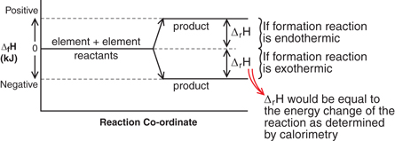
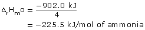
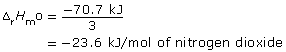

Module 1—Thinking Energy
Explore
Read
reference energy state: a reference point at which the potential energy of the elements in their most stable form at SATP is defined as zero
standard enthalpy of formation: the enthalpy change calculated from the measurements of a formation reaction under standard conditions
In previous lessons you may have noticed the difference between the symbols ΔrHº and ΔrH. The degree symbol means that a reaction enthalpy or other property of a system was measured at a standard state. A standard state is a defined set of conditions. You may recall learning two sets of standard conditions when working with gases: STP and SATP.
Read the first two paragraphs on page 510 in the textbook to learn more about the standard used in enthalpy determinations. Take note of the definitions for reference energy state and standard enthalpy of formation.
 Self-Check
Self-Check
SC 1. Using an energy diagram, explain how defining elements as having a standard enthalpy of formation allows for the determination of standard enthalpies of formation for compounds.
Self-Check Answers
Contact your teacher if your answers vary significantly from the
answers provided here.
SC 1. 
Read
thermal stability: the tendency of a compound to resist decomposition when heated
The lower a compound's standard enthalpy of formation, the more stable the compound.
Read the remainder of page 510 in the textbook to learn about the concept of thermal stability. Keep an image of an energy diagram fresh in your mind as you read.
Does the analogy stated in the textbook make sense to you? Which substance has greater thermal stability: octane (ΔfHmº = −250.1 kJ/mol) or trinitrotoluene (TNT, ΔfHmº = +123.6 kJ/mol)? Is your conclusion consistent with the reputations of these two compounds?
Read
Work through “Sample problem 11.5” on page 511 of the textbook to see how molar enthalpies of formation can be used to calculate enthalpies of reaction. You may also wish to read pages 512–513.
Self-Check
SC 2. Complete “Section 11.5” questions 2 and 3 on page 514 of the textbook.
Self-Check Answers
Contact your teacher if your answers vary significantly from the answers provided here.
SC 2.
Section 11.5 2.
-
Reactants
Products
Species
CH4(g)
H2O(g)
CO(g)
H2(g)
Coefficient (mol)
1
1
1
3
ΔfHmº (kJ/mol)
−74.6
−241.8
−110.5
0
Σn ΔfHmº
= [(1 mol × −74.6 kJ/mol)
+ (1 mol × −241.8 kJ/mol)]
= −316.4 kJ= [(1 mol × −110.5 kJ/mol)
+ (3 mol × 0 kJ/mol)]
= −110.5 kJΔrHº
= −110.5 kJ − (−316.4 kJ)
= +205.9 kJ
Reactants
Products
Species
CO(g)
H2O(g)
CO2(g)
H2(g)
Coefficient (mol)
1
1
1
1
ΔfHmº (kJ/mol)
−110.5
−241.8
−393.5 kJ
0
Σn ΔfHmº
= [(1 mol × −110.5 kJ/mol)
+ (1 mol × −241.8 kJ/mol)]
= −352.3 kJ= [(1 mol × -393.5 kJ/mol)
+ (1 mol × 0 kJ/mol)]
= −393.5 kJΔrHº
= −393.5 kJ − (−352.3 kJ)
= −41.2 kJ
Reactants
Products
Species
N2(g)
H2(g)
NH3(g)
Coefficient (mol)
1
3
2
ΔfHmº (kJ/mol)
0
0
−45.9
Σn ΔfHmº
= [(1 mol × 0 kJ/mol)
+ (3 mol × 0 kJ/mol)]
= 0 kJ= (2 mol × −45.9 kJ/mol)
= −91.8 kJΔrHº
= −91.8 kJ − (0 kJ)
= −91.8 kJ
Reactants
Products
Species
NH3(g)
O2(g)
NO(g)
H2O(g)
Coefficient (mol)
4
5
4
6
ΔfHmº (kJ/mol)
−45.9
0
+91.3
−241.8
Σn ΔfHmº
= [(4 mol × −45.9 kJ/mol)
+ (5 mol × 0 kJ/mol)]
= −183.6 kJ= [(4 mol × +91.3 kJ/mol)
+ (6 mol × −241.8 kJ/mol)]
= −1085.6 kJΔrHº
= −1085.6 kJ − (−183.6 kJ)
= −902.0 kJ

Reactants
Products
Species
NO(g)
O2(g)
NO2(g)
Coefficient (mol)
2
1
2
ΔfHmº (kJ/mol)
+91.3
0
+33.2
Σn ΔfHmº
= [(2 mol × +91.3 kJ/mol)
+ (1 mol × 0 kJ/mol)]
= +181.6 kJ= (2 mol × +33.2 kJ/mol)
= +66.4 kJΔrHº
= +66.4 kJ − (+181.6 kJ)
= −116.2 kJ

Reactants
Products
Species
NO2(g)
H2O(g)
HNO3(l)
NO(g)
Coefficient (mol)
3
1
2
1
ΔfHmº (kJ/mol)
+33.2
−285.8
−174.1
+91.3
Σn ΔfHmº
= [(3 mol × +33.2kJ/mol)
+ (1 mol × −285.8 kJ/mol)]
= −186.2 kJ= [(2 mol × −174.1 kJ/mol)
+ (1 mol × +91.3 kJ/mol)]
= −256.9 kJΔrHº
= −256.9 kJ − (−186.2 kJ)
= −70.7 kJ

Self-Check
In the previous Self-Check activity you used the standard molar enthalpies of formation for compounds to predict the reaction enthalpy. Can this process be reversed?
If given a reaction enthalpy, most likely determined by experiment, a standard molar enthalpy of formation for a species in the reaction can be determined as long as the standard molar enthalpies of formation for the other species are known.
SC 3. Calculate the standard molar enthalpy of formation for hexane, C6H14(l). Assume that hexane’s standard molar enthalpy of combustion is −4162.9 kJ/mol.
Self-Check Answers
Contact your teacher if your answers vary significantly from the answers provided here.
SC 3.
Balanced Reaction Equation
C6H14(l) + 19/2 O2(g) → 6 CO2(g) + 7 H2O(g) ΔrHmº = –4162.9 kJ/mol C6H14(l)
ΔrHº = –4162.9 kJ/mol x 1 mol C6H14(l)
= –4162.9 kJ
|
|
Reactants |
Products |
ΔrHº |
||
|
Species |
C6H14(l) |
O2(g |
CO2(g) |
H2O(g) |
|
|
Coefficient (mol) |
1 |
19/2 |
6 |
7 |
|
|
ΔfHmº (kJ/mol) |
? |
0 |
–393.5 |
–241.8 |
|
|
Σn ΔfHmº |
= [(1 mol × ΔfHmº(hexane))
+ (19/2 mol × 0 kJ/mol)] |
= [(6 mol × −393.5 kJ/mol) + (7 mol ×
−241.8 kJ/mol)] |
−4162.9 kJ |
||
−4053.6 kJ − (1 mol × ΔfHmº(hexane)) = −4162.9 kJ
ΔfHmº(hexane) = +109.3 kJ/mol
The standard molar enthalpy of formation for hexane is +109.3 kJ/mol.
 Module 1: Lesson 8 Assignment
Module 1: Lesson 8 Assignment
Retrieve your copy of the Module 1: Lesson 8 Assignment that you saved to your computer earlier in this lesson. Complete the Assignment. Save a copy of your completed Assignment in your course folder and submit a copy to your teacher.